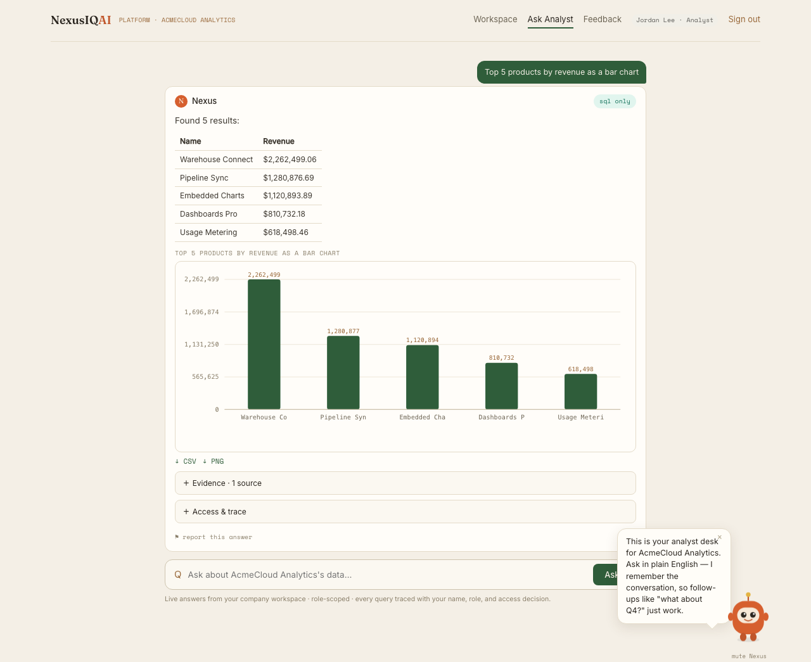
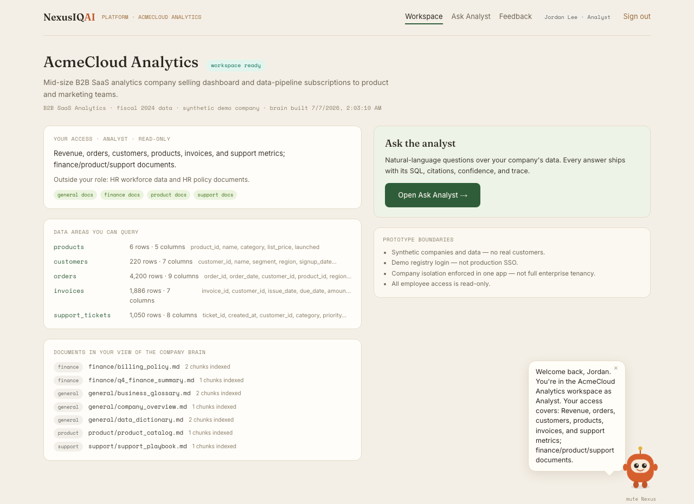
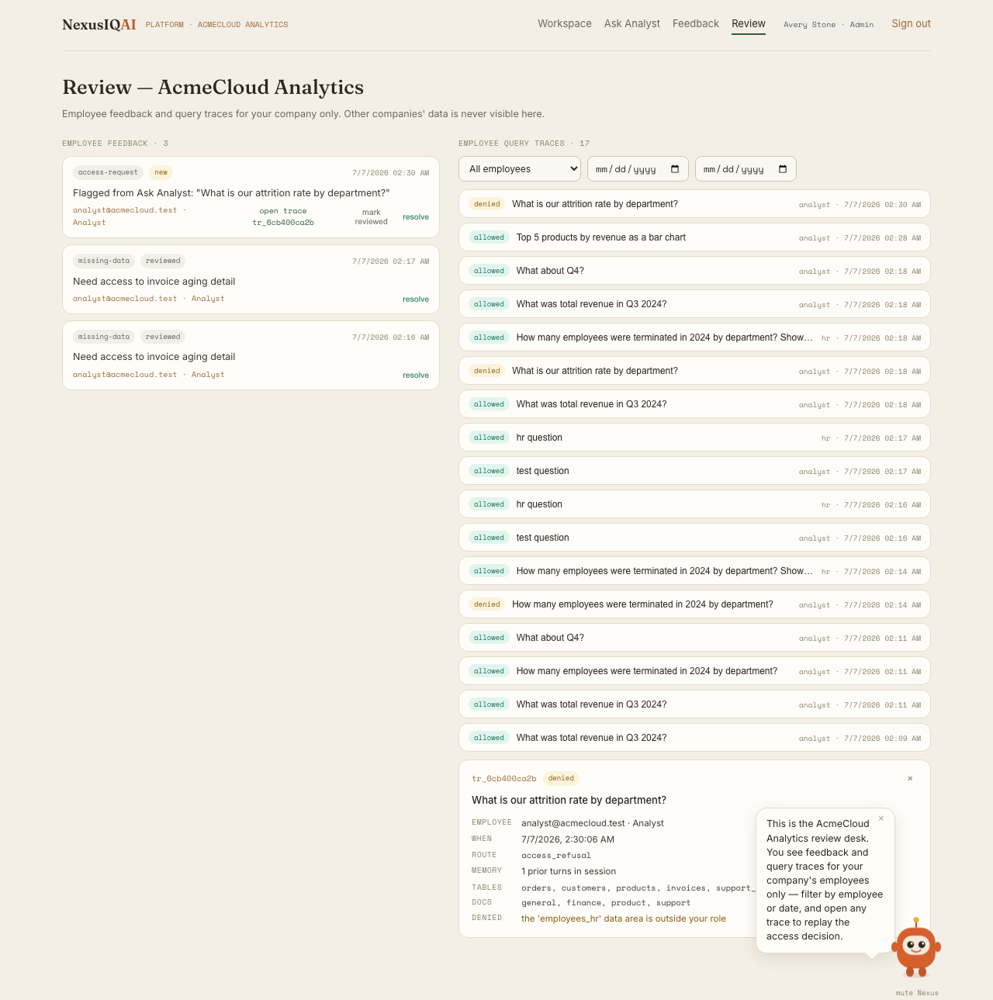
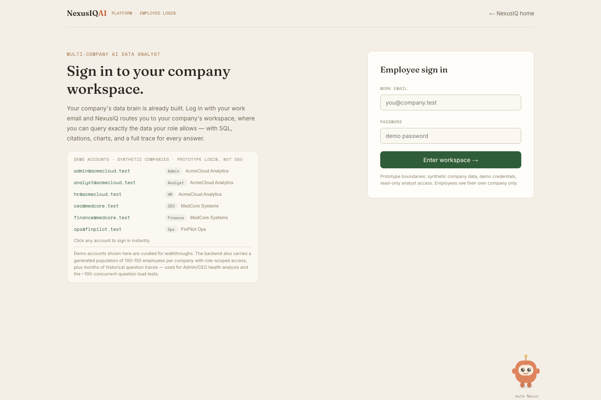
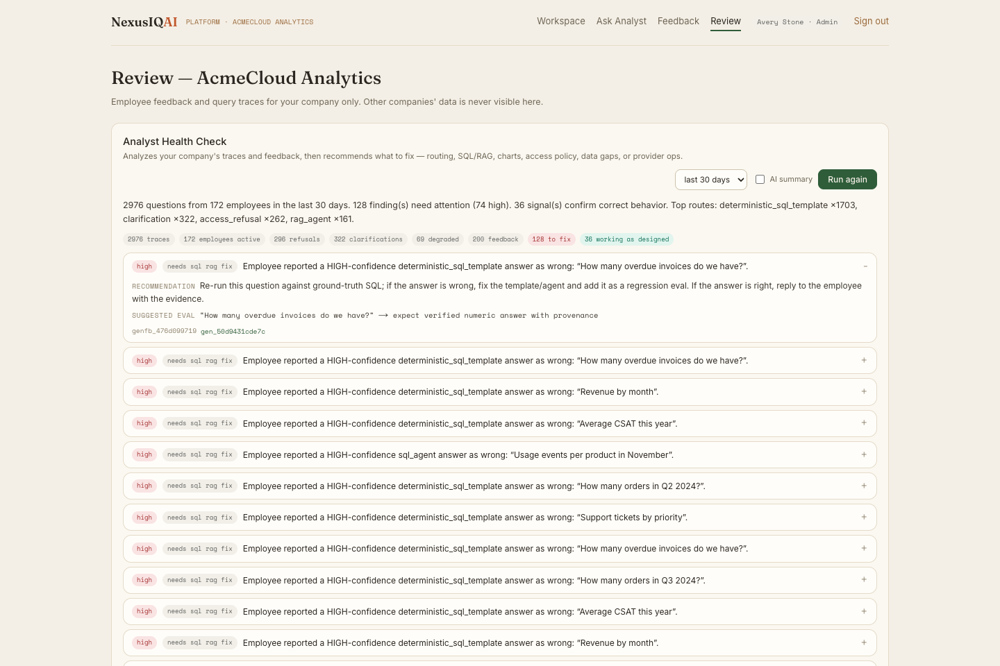

NexusIQ AI Platform
Live · nexusiq-ai.comA governed, multi-company AI data analyst. An employee signs in to their company's workspace and asks questions in plain English — every answer arrives with its SQL, document citations, a chart, an access decision, and a trace an admin can audit.



Access isn't a filter bolted onto the request — the boundary is baked into each (company, role) agent instance, so a request can't widen what the agent can see. Every answer passes through four independent layers:
SQL prompt scoping
The model only ever sees the schema subset its role is allowed — restricted tables never enter the prompt.
schema subsettingAST table allowlist
Generated SQL is parsed with sqlglot; queries touching an off-limits table are rejected before they run.
sqlglot ASTVector metadata filter
Document retrieval (vector, hybrid, and BM25 paths) is constrained by role metadata at index-build time.
ChromaDB filterCitation check
The final answer is validated so it can only cite evidence the role was permitted to read.
response-levelA deterministic analyst layer answers common questions from template SQL with no model call, so the product stays fully functional under provider rate-limits. An admin-only Health Check agent audits traces, surfaces findings, and routes proposed fixes through human review before anything is implemented.


Honest boundaries: NexusIQ runs on synthetic company data with a demo login registry (not production SSO or real customers). Those limits are labeled in-product — they're what make the access-control and audit claims verifiable rather than marketing.
Analytics and ML, end to end
From raw transactions to executive-ready answers — modeling, evaluation, and honest metrics.
RevenueIQ AI
Analytics · MLA business-analytics and ML system that turns raw retail transactions into executive-ready insight.
- Processed 534K+ public UCI retail transactions into analytics across $10.6M analyzed revenue and 4,339 customers.
- Five ML workflows including 95% F1 churn prediction and Isolation Forest anomaly detection — flagged 978 at-risk customers.
- Cut report generation from 2 hours to 60 seconds; accelerated SQL analytics 7.7× by replacing Pandas paths with DuckDB.
Governance & Reliability
Practice · FocusThe engineering discipline running through both projects — making AI outputs testable, access-safe, and explainable.
- Multi-turn session memory where access policy is re-applied every turn, so memory can never widen scope.
- A trace-leakage auditor and access-policy simulator proving zero cross-role or cross-company reads.
- Deterministic-first routing and a quota-aware model gateway (Gemini, Groq, NVIDIA NIM, Bedrock fallback) for cost and reliability.
Peer-reviewed NLP
ADICS
2024
Cyberbullying detection on social-media text
As research team lead, I led a 4-member team through building and validating a 47K-instance NLP dataset — text normalization, deduplication, label validation, and a reproducible model-comparison workflow — then co-authored a peer-reviewed comparison of ML and deep-learning classifiers, with the best documented model reaching 79.8% accuracy.
Read on IEEE Xplore →